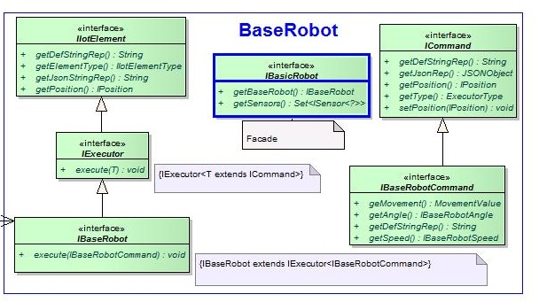
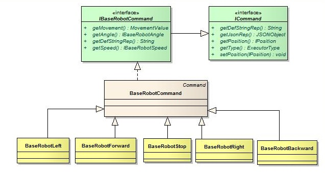
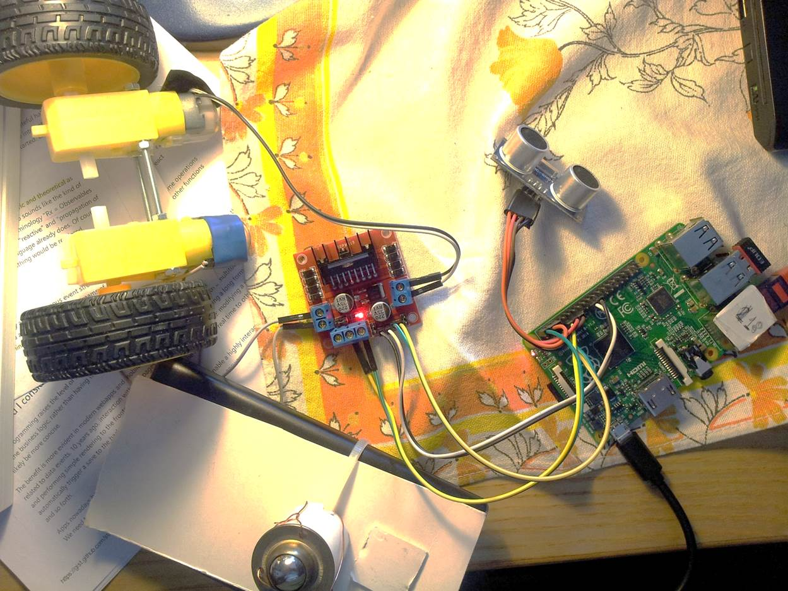
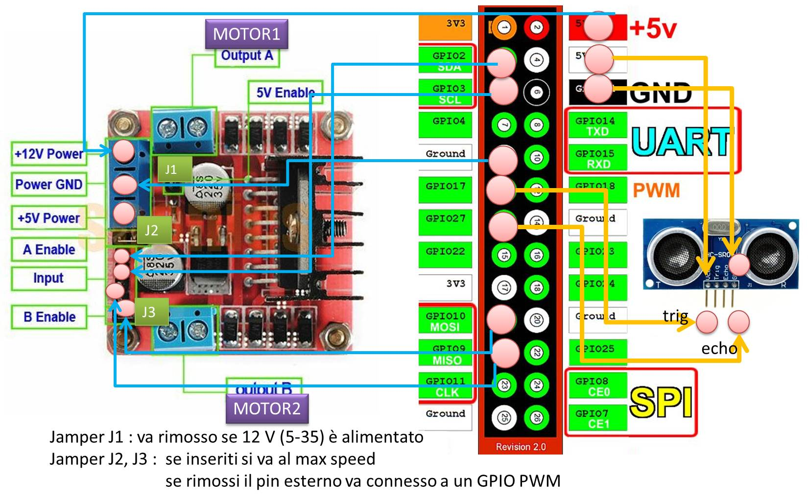
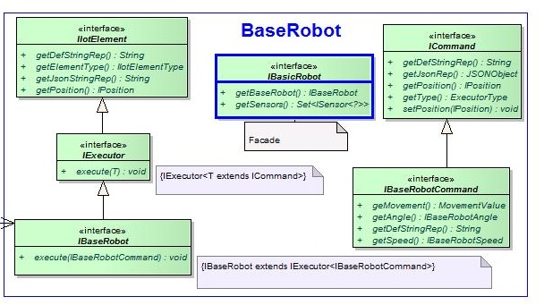
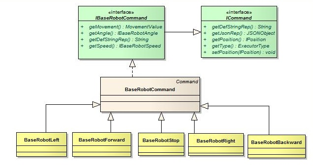
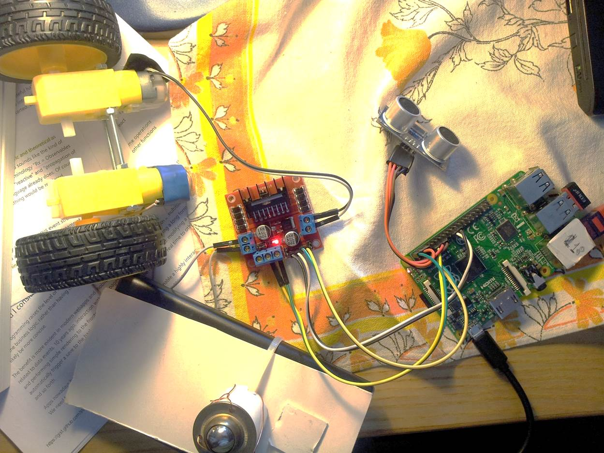
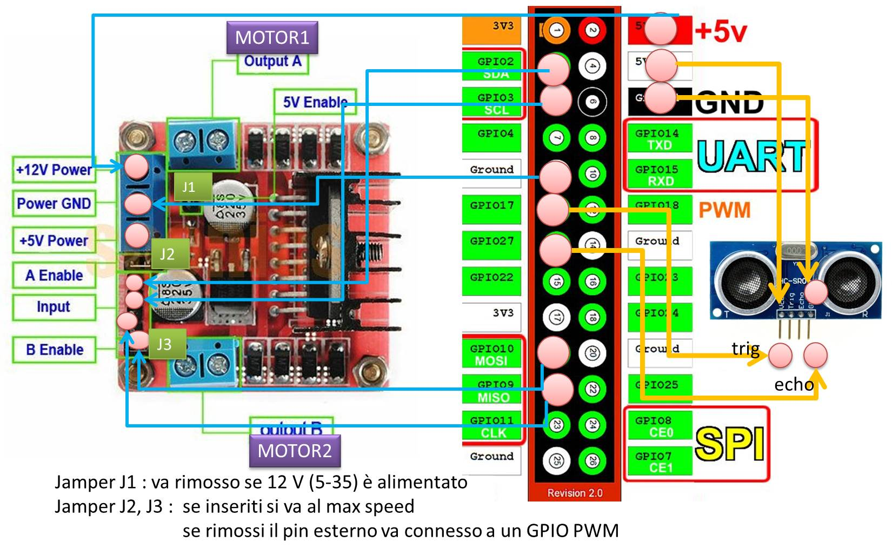
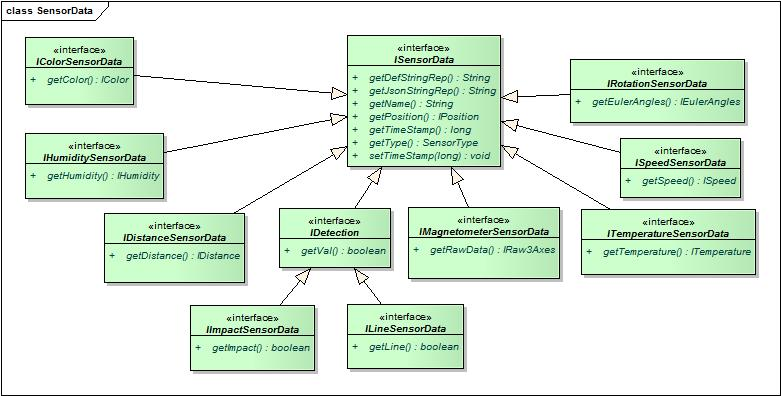
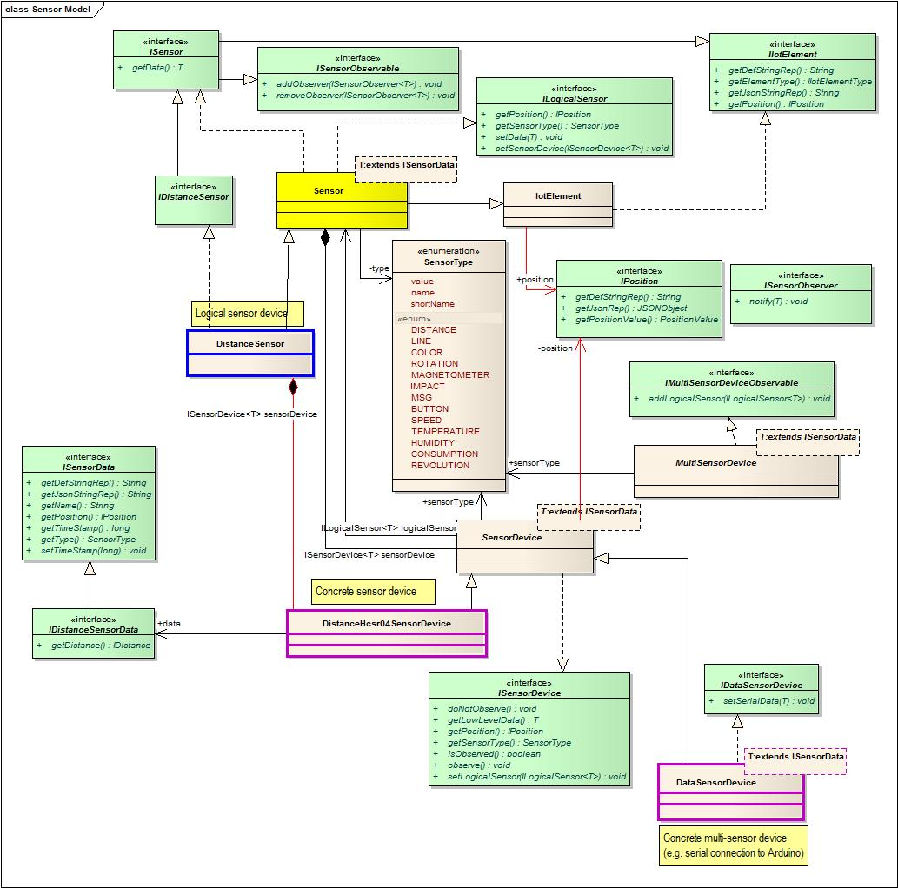

The BaseRobot is an IOT device that can be physically composed in different ways, by connecting devices
to a RaspberryPi and/or Arduino.
The project it.unibo.lab,baseRobot provides the file labbaseRobotSam.jar that includes a basic software support for simple, low cost ddr robots. The project it.unibo.lab.baseRobot.example provides examples of usage of this software:An example of usage of the BaseRobot starting from BaseRobotUsageNaive

Thus, it is a composed object whose components can be selected by means of a Facade given by the getRobot operation of the BasicRobot class:
An example of usage of the BaseRobot starting from the facade IBasicRobot: BasicRobotUsageNaive


The connectioss are:

From this specification, the baseddr software factory generates the following file (in a directory namend configuration/nano0:
The project it.unibo.lab,baseRobot provides the file labbaseRobotSam.jar that includes a basic software support for simple, low cost ddr robots. The project it.unibo.lab.baseRobot.example provides examples of usage of this software:
The Facade IBasicRobot
From the user point of view, a BaseRobot is can be modeled as a POJO equipped with a set of observable sensosrs, able to excute movement commands.
Thus, it is a composed object whose components can be selected by means of a Facade given by the getRobot operation of the BasicRobot class:
package it.unibo.iot.baseRobot.hlmodel;
import java.util.Set;
import it.unibo.iot.executors.baseRobot.IBaseRobot;
import it.unibo.iot.sensors.ISensor;
public interface IBasicRobot {
public IBaseRobot getBaseRobot(); //selector
public Set> getSensors(); //selector
}
BaseRobot as Executor
IBaseRobot
package it.unibo.iot.executors.baseRobot; import it.unibo.iot.executors.IExecutor; import it.unibo.iot.models.commands.baseRobot.IBaseRobotCommand; public interface IBaseRobot extends IExecutor{ public void execute(IBaseRobotCommand command); }

BaseRobot Hardware
From the physical point of view, the robot is composed of (see also Buy):- 2 motors
- 1 L298N Motor Drive Board
- 1 sonar HC-SR04
- 1 Raspberry Pi
- 1 Battery

The connectioss are:

MotorA
MotorB
Sensor Data

The current versione implements (see QRobot):
RobotSensorType: Line | Distance | Impact | Color | Magnetometer
| SENSOR | Data representation in Prolog | Data representation Json |
|---|---|---|
| COLOR | color(255 255 255, front) | {"p":"f","t":"c","d":{"color":{"r":255,"b":255,"g":255}},"tm":148...} |
| DISTANCE | distance(43,forward, front) | {"p":"f","t":"d","d":{"cm":43},"tm":14...} |
| IMPACT | impact(touch/loss, front) | {"p":"f","t":"i","d":{"detection":"touch"},"tm":14...} |
| LINE | line(lineLeft/lineDetected, bottom) | {"p":"b","t":"l","d":{"detection":"lineDetected"},"tm":14...} |
| MAGNETOMETER | magnetometer(x(50),y(100),z(0), front) | {"p":"f","t":"m","d":{"raw3axes":{"x":50,"y":100,"z":0}},"tm":14...} |
Position of a sensor
Each sensor is associated to a position that can assume one of the following values:
DONTCARE|
FRONT | RIGHT | LEFT | BACK | TOP | BOTTOM |
FRONT_RIGHT | FRONT_LEFT | BACK_RIGHT | BACK_LEFT |
TOP_RIGHT | TOP_LEFT | BOTTOM_RIGHT | BOTTOM_LEFT |
FRONT_TOP | BACK_TOP | FRONT_TOP_LEFT | FRONT_TOP_RIGHT |
FRONT_RIGHT_TOP | FRONT_LEFT_TOP | BACK_RIGHT_TOP | BACK_LEFT_TOP
Sensor implementation (Pattern Bridge)
BaseRobot nan0 configuration
Here is the specification of the configuration of a low-cost ddr robot equipped with a sonar, expressed in the baseddr language:From this specification, the baseddr software factory generates the following file (in a directory namend configuration/nano0:
Devices for ddr robot
Raspberry PI 3 Model B Scheda madre CPU 1.2 GHz Quad Core, 1 GB RAM
Raspberry PI 3 Model B Scheda madre CPU 1.2 GHz Quad Core, 1 GB RAM
Arduino Uno Microcontrollore
AMAZON arduino
EasyAcc Colorato 10000mAh
AMAZON oh_aui_detailpage_o02_s00
HG7881CP
AMAZON oh_aui_detailpage_o09_s00
(Consigliato questo) L298N
AMAZON oh_aui_detailpage_o01_s00?ie
TT motor TT wheel robot car motor + wheel suit
EBAY TT-motor-TT-wheel-robot-car-motor-wheel-suit
EP-N8553 NANO Antenna Wifi 150 Mbps Usb 802.11
AMAZON oh_aui_detailpage_o00_s00
HC-SR04 Distance Sensor
AMAZON oh_aui_detailpage_o03_s00
EBAY
EBAY